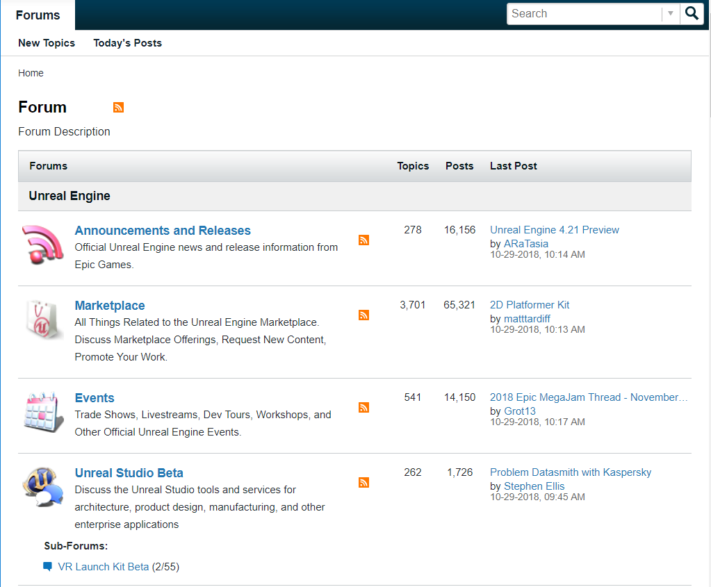
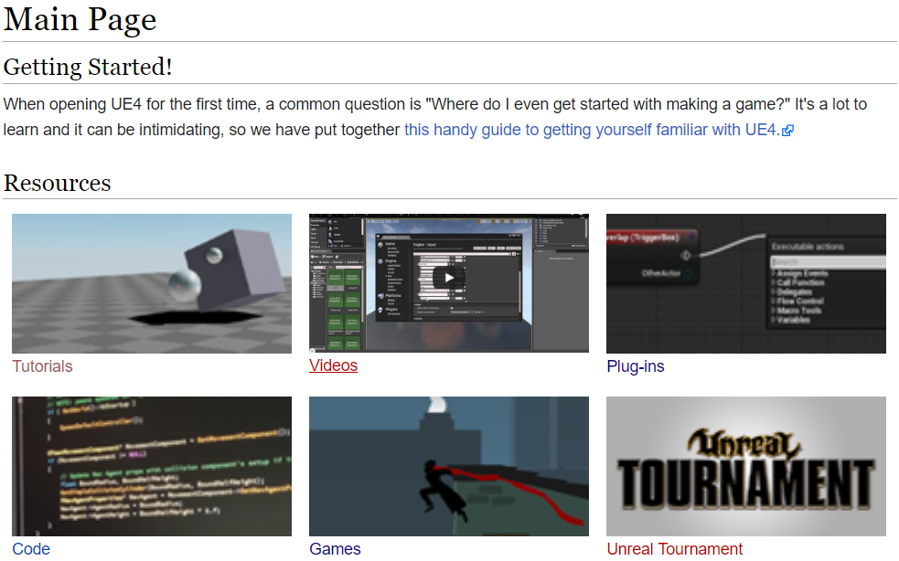
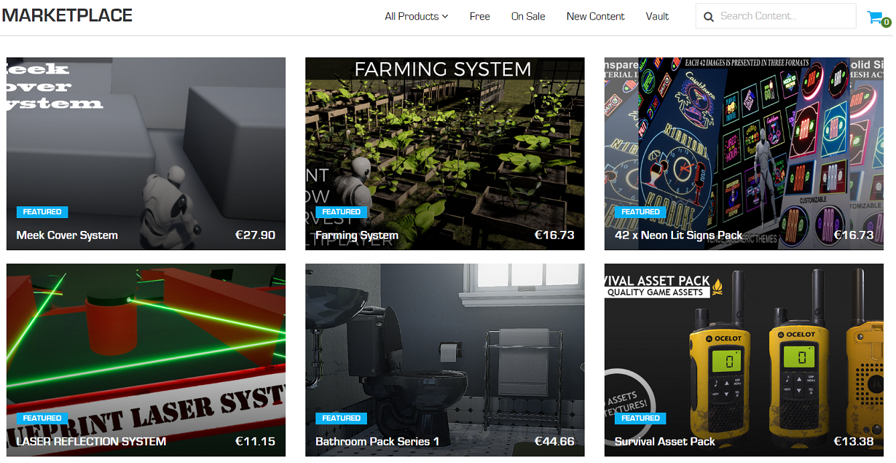
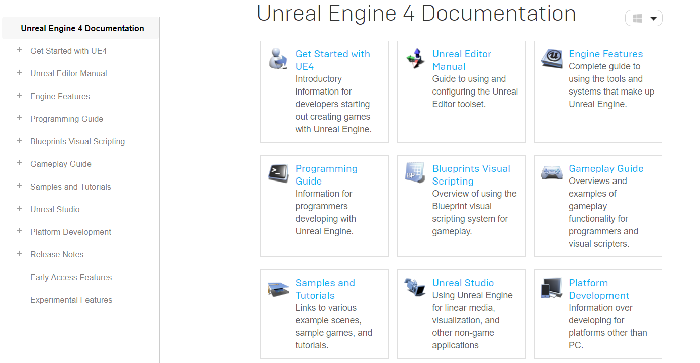

Community
De community is de gemeenscahp van Unreal Engine. Het zijn dus de gebruikers ervan die met elkaar contact houden om van elkaar te leren over hoe je iets moet doe in Unreal Engine.
De community van Unreal bestaat uit de forum en de wiki.
Forum
Het forum van Unreal is de plek om vragen aan elkaar te stellen over de game engine. Als u dus een probleem hebt, kan je naar de forum gaan en je vraag stellen aan de community en is er een kans dat je vraag wordt beantwoord door iemand anders die ook op het forum zit. Op het forum heb je verschillende onderwerpen. Voorbeelden van onderwerpen zijn: Announcements and Releases,
Rendering en HTML5 Development.
Als u op de foto klikt gaat u naar de hoofdpagina van het forum.

Wiki
De wiki is de eerste plek waar u naartoe gaat als u voor het eerst begind met Unreal Engine.
Op deze site vindt u van alles om te leren hoe Unreal Engine werkt. Hier vindt u onder andere tutorials, videos en informatie over plug-ins en coderen.

Assets
Iedereen kan Uneal Engine gratis gebruiken. Om er gebruik van te maken moet je wel eerst een gratis account aanmaken bij Epic Gams (Epic Games is de eigenaar van Unreal Eninge). Als je dat hebt gedaan kan je Unreal Engine downloaden en gebruiken. Ook krijg je dan gratis eventuele updates.

Documentatie
Bij de documentatie vind u de hele handleiding van Unreal Engine. Dat houd dus in dat elke feature van Unreal Engine wordt uitgelegt en besproken.
